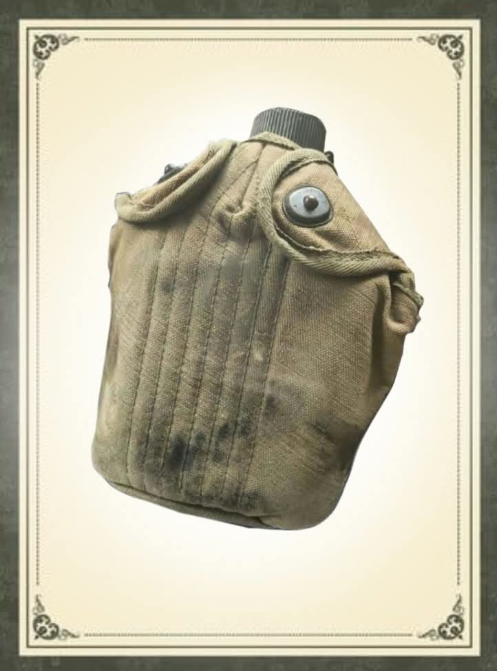

KANTINA

Sa kulturang Pilipino, tinatawag din ito minsan ng mga matatanda o beterano na sartin (dahil sa materyal na enamel o metal nito) o kaya ay kantina. Sa kasalukuyan, mas kilala na ito sa tawag na water tumbler o flask. Ito'y lalagyan ng tubig na bitbit nga mga sundalong pilipino at amekano noong 1942 sa gyera laban sa mga hapon.